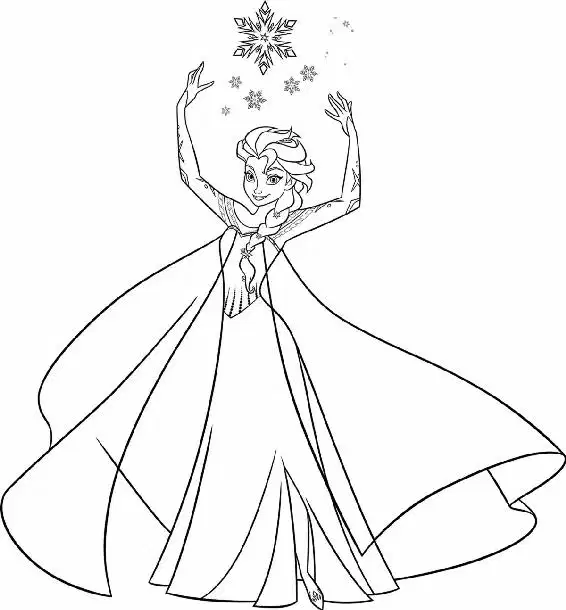

Anna’s body felt even colder than when she was out in the storm. But it was a relief to tell Hans everything, to know that he could help her.
After hearing the whole tale, Hans looked at her with a tender smile. “A true love’s kiss,” he said pensively. He leaned in close, ready to kiss her. Anna lifted her chin and closed her eyes in anticipation. Then he stopped.
“Oh, Anna,” he said. “If only somebody loved you.” “What?” Anna said in shock.
Hans rose to his feet and walked away. He stood in front of the window, looking out over the kingdom. “As thirteenth in line in my own kingdom, I didn’t stand a chance,” he told her. “I knew I’d have to marry into the throne somewhere.”
Anna could barely lift her head. “What? What are you talking about?” she asked.
“As heir, Elsa was preferable, of course,” Hans continued. “But no one was getting anywhere with her. But you...” He trailed off with a small smile.
“Hans?” Anna said, growing concerned.
“Like your sister said,” he told her. “You were so desperate for love, you were willing to marry me just like that.” He walked over to a table and grabbed a pitcher of water. Then he moved closer to the fire. “I figured after we married, I’d have to stage a little accident for Elsa.” He poured the water on the fire, putting it out.
Anna reached out to stop him, but she was too weak and once again fell to the floor. “Hans, no, stop!” she cried.
Ignoring her plea, Hans took the fire poker and smothered the remaining embers. A cold draft filled the room. “But then she doomed herself, and you were dumb enough to go after her,” he snickered.
“Please,” Anna begged.
Hans laughed. “All that’s left now is to kill Elsa and bring back summer.”
A sense of despair engulfed Anna as she realized the depth of Hans’s cruelty. “You’re no match for Elsa,” she said bravely.
Hans looked down at Anna. “No, you’re no match for Elsa,” he told her. “I, on the other hand, am the hero who is going to save Arendelle from destruction.” He strode to the door.
“You won’t get away with this,” Anna said fiercely. “Oh, I already have,” Hans said with a nasty grin.
He walked out, locking the door tight.
Anna tried to get up from the floor, but she was too weak. She could feel the cold taking the last of her strength.
“Please, somebody,” she called out hoarsely. “Help!” She looked around the dark room and knew she was totally alone. “Please, please,” she whispered.
And then she collapsed.
Hans left Anna and went to the council chamber where the Duke and other dignitaries were gathered. “It’s getting colder by the minute,” the Duke said.
“Forget starving; we’ll soon freeze to death.”
Hans fell into a chair, looking weak and grief- stricken.
“Prince Hans!” a dignitary said, reaching out to him gently.
Hans lowered his head and chuckled to himself. He had sat down on the throne. His plan was moving along perfectly. Pretending to be full of remorse, Hans said, “Princess Anna is... dead.”
“What?” the other men exclaimed.
“How could this happen?” one of the dignitaries asked.
Hans shook his head slowly. “She was killed by Queen Elsa.”
“No!” the Duke shouted.
With his head in his hands, Hans played the part of a grieving man. “We said our wedding vows... before she died in my arms.”
“There can be no doubt now,” the Duke declared. “Queen Elsa is a monster!”
“Prince Hans,” stated one of the dignitaries. “Arendelle looks to you.”
Hans nodded grimly, but he was secretly elated. Never in his wildest dreams could he have plotted his ascent to the throne so gloriously. “With a heavy heart, I charge Queen Elsa with treason and sentence her to death,” he declared.
In her dungeon cell, Elsa stood by the window. The snow was cascading down heavily. She wondered where Anna was at that moment. Anna would never be able to survive this storm.
Maybe I am a monster, she thought. Hans’s words haunted her. Her powers had done nothing but cause great trouble for the kingdom.
Elsa knew that she had to leave Arendelle so she wouldn’t do any more harm. As her eyes welled up with tears, she looked down at her shackles. They were completely frozen, and suddenly, they broke open. Then, with a thunderous crash, ice broke through the dungeon walls, splitting them apart as Elsa’s emotions overwhelmed her mind and heart. Realizing she could escape, Elsa hurried through the gaping hole in the wall.
Hans heard the noise and ran down to the dungeon. The Duke and his guards were already there.
“What happened?” Hans asked.
“The queen has escaped,” the Duke replied, gazing through the opening in the wall.
